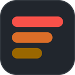
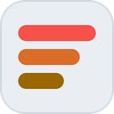

Shows the values of custom issue fields and the age of issues as badges on sub-issue lists and on project views, and keeps your pinned epics one click away.
This browser has not granted the extension access to github.com and api.github.com yet. Firefox asks for this separately from the installation.
Field values are read through the GitHub API. The token is stored in this browser profile only and is sent to nothing but api.github.com. Fields with "Organization only" visibility need a token of an organization member.
Recommended: a classic token with the repo scope. If the organization enforces SSO, open "Configure SSO" next to the new token and authorize it for that organization.
A fine-grained token also works: set the organization as resource owner, pick the repositories, and under Repository permissions set Issues to Read-only.
Names of the issue fields to display, matched case-insensitively against the fields defined by the organization. Badges appear in this order; single-select values use the option's colour.
Press Enter or , to add a field, Backspace or the × button to remove one. Nothing is shown until at least one field is added or the age badge is enabled.
Adds a badge with the time elapsed since the issue was created, next to the field badges, on sub-issue lists and on project table and board views.
Hovering the badge shows the exact age in months and days and the creation date.
A pin button in GitHub's top bar, next to the notifications bell, opens a panel with your pinned issues, for example epics. From there you can copy the reference or make the issue you are looking at a sub-issue of a pinned epic. Linking writes to GitHub, so the token needs write access to the issue's repository (the repo scope for classic tokens, Issues: Read and write for fine-grained ones).